阅读词表
| 词条 | 拼音 | 类型 | 说明 |
|---|---|---|---|
| 殷墟 | yīn xū | site_or_culture | 商代晚期都城遗址。 |
| 殷都 | yīn dū | place | 商朝后期都城区域，今安阳殷墟一带。 |
| 刘家庄北 | liú jiā zhuāng běi | site_or_culture | 殷墟南部商人聚落和制陶区。 |
| 大司空村 | dà sī kōng cūn | site_or_culture | 殷墟东侧重要商代聚落。 |
| 祭祀坑 | jì sì kēng | concept | 用于祭祀埋牲或埋人的坑穴。 |
| 人祭 | rén jì | concept | 杀人用于祭祀。 |
| 族邑 | zú yì | concept | 商代宗族聚落。 |
| 人牲 | rén shēng | concept | 被杀用于祭祀的人。 |
| 戚家庄东 | qī jiā zhuāng dōng | site_or_culture | 殷墟范围内少见少殉或无殉的商代墓地。 |
| 童牲 | tóng shēng | concept | 被用于祭祀或奠基的儿童人牲。 |
| 卜辞 | bǔ cí | text | 甲骨上记录占卜的文字。 |
| 人奠基 | rén diàn jī | concept | 以人牲用于建筑奠基。 |
| 人殉 | rén xùn | concept | 随墓主而死或被杀陪葬。 |
| 大围沟 | dà wéi gōu | site_or_culture | 殷墟宫殿区外围大型沟壕。 |
| 箙 | fú | rare_word | 古代盛放箭矢的器具，也用作族徽。 |
| 铜戈 | tóng gē | bronze_item | 青铜戈，商周常见兵器。 |
| 铜矛 | tóng máo | bronze_item | 青铜矛，刺击兵器。 |
| 铜镞 | tóng zú | bronze_item | 青铜箭头。 |
| 车马坑 | chē mǎ kēng | concept | 埋葬车马的陪葬坑。 |
| 戣 | kuí | rare_word | 古代一种长柄兵器；本章所称铜戣为三角形戈。 |
| 鬲 | lì | rare_word | 古代炊器。 |
| 铜钺 | tóng yuè | bronze_item | 青铜钺，常象征军事权力。 |
| 骨笄 | gǔ jī | artifact | 骨制发簪。 |
| 方彝 | fāng yí | bronze_item | 青铜礼器名。 |
| 觚 | gū | bronze_item | 古代饮酒器。 |
| 爵 | jué | bronze_item | 古代饮酒器。 |
| 偃师商城 | yǎn shī shāng chéng | 项目词典 | 商代早期城址，位于二里头以东。 |
| 半地穴式 | bàn dì xué shì | 项目词典 | 部分低于地面的房屋形式。 |
| 夯土地基 | hāng tǔ dì jī | 项目词典 | 夯土筑成的建筑基础。 |
| 甲骨卜辞 | jiǎ gǔ bǔ cí | 项目词典 | 商代刻写在甲骨上的占卜文字。 | 刻写在龟甲兽骨上的占卜文字。 | 刻写在甲骨上的占卜记录。 | 刻写在龟甲兽骨上的占卜辞句。 |
| 郑州商城 | zhèng zhōu shāng chéng | 项目词典 | 商代早期大型城址。 |
| 青铜礼器 | qīng tóng lǐ qì | 项目词典 | 用于礼仪或祭祀的青铜器。 |
| 原始瓷 | yuán shǐ cí | 项目词典 | 早期高温釉陶或瓷器形态。 |
| 周公旦 | zhōu gōng dàn | 项目词典 | 周初政治家。 | 西周初年政治家，文中指其取缔人祭风俗。 |
| 宫殿区 | gōng diàn qū | 项目词典 | 都邑中宫殿和王室活动集中的区域。 |
| 小双桥 | xiǎo shuāng qiáo | 项目词典 | 郑州西北中商时期重要遗址。 |
| 王陵区 | wáng líng qū | 项目词典 | 王室墓葬集中的区域。 | 王室墓葬和祭祀坑集中的区域。 |
| 红烧土 | hóng shāo tǔ | 项目词典 | 经火烧后变红变硬的土，常见于考古遗迹。 |
| 老牛坡 | lǎo niú pō | 项目词典 | 西安附近商代遗址，文中涉及商人据点和人祭。 | 陕西西安商代遗址。 |
| 肩胛骨 | jiān jiǎ gǔ | 项目词典 | 肩部骨骼，古代常用于占卜。 | 动物或人的肩部骨骼，常被加工为卜骨。 |
| 角斗士 | jué dòu shì | 项目词典 | 古罗马竞技表演中的搏斗者。 |
| 铜礼器 | tóng lǐ qì | 项目词典 | 用于礼仪或祭祀的青铜器。 |
| 中人 | 项目词典 | 宦官。 | |
| 亶父 | dǎn fǔ | 项目词典 | 古公亶父；周族迁居周原时的首领。 |
| 偃师 | yǎn shī | 项目词典 | 今河南洛阳附近地名，二里头遗址所在地。 |
| 卜骨 | bǔ gǔ | 项目词典 | 用于占卜的兽骨。 | 用于占卜并刻写文字的兽骨。 |
| 合祭 | hé jì | 项目词典 | 把多位祖先或神灵合在一起祭祀。 |
| 周公 | zhōu gōng | 项目词典 | 周公旦，武王之弟。 | 周公旦，周初政治家。 |
| 周原 | zhōu yuán | 项目词典 | 关中地区周族的重要活动中心。 | 关中地区周族重要遗址和活动中心。 | 周族核心区域。 |
| 周昌 | zhōu chāng | 项目词典 | 周文王姬昌，书中常称周昌。 | 周文王姬昌。 | 周文王之名。 |
| 商族 | shāng zú | 项目词典 | 商王朝建立前后的族群共同体。 |
| 商王 | shāng wáng | 项目词典 | 商朝王。 |
| 土著 | tǔ zhù | 项目词典 | 本地原有居民或族群。 |
| 坑口 | kēng kǒu | 项目词典 | 坑穴在地表或开口处的形状和范围。 | 坑穴开口处的形状和范围。 |
| 坑壁 | kēng bì | 项目词典 | 坑穴侧壁。 |
| 坑底 | kēng dǐ | 项目词典 | 坑穴底部，常用于描述考古遗迹。 | 坑穴底部。 |
| 基址 | jī zhǐ | 项目词典 | 建筑物遗留下来的基础位置。 |
| 填土 | tián tǔ | 项目词典 | 填入坑穴或遗迹中的土层。 |
| 夯土 | hāng tǔ | 项目词典 | 把土层层夯实形成建筑基础或城墙的技术。 |
| 夯筑 | hāng zhù | 项目词典 | 用夯打方式筑成墙体或台基。 |
| 奠基 | diàn jī | 项目词典 | 建筑开始时的基础工程或相关仪式。 | 建筑开始时的基础仪式或基础施工。 |
| 妇好 | fù hǎo | 项目词典 | 商王武丁配偶，甲骨文中著名女性军事人物。 |
| 帝辛 | dì xīn | 项目词典 | 商纣王的王名。 |
| 族徽 | zú huī | 项目词典 | 族群标识，常见于商周青铜器铭文。 |
| 杀祭 | shā jì | 项目词典 | 以杀牲或杀人作为祭祀的仪式。 | 通过杀牲或杀人进行的祭祀。 | 通过杀人或杀牲举行的祭祀。 |
| 殉人 | xùn rén | 项目词典 | 陪葬或随葬的人。 |
| 殉葬 | xùn zàng | 项目词典 | 以人或物随葬。 |
| 殷商 | yīn shāng | 项目词典 | 商朝后期文化和政权。 | 商代后期以殷墟为中心的商王朝阶段。 |
| 淤积 | yū jī | 项目词典 | 泥沙等沉积、堆积。 |
| 灰坑 | huī kēng | 项目词典 | 考古遗迹中常见的垃圾坑或废弃坑。 | 遗址中含灰土、废弃物或祭祀遗存的坑穴。 |
| 献祭 | xiàn jì | 项目词典 | 把祭品奉献给神灵或祖先。 | 向神灵、祖先等奉献祭品。 |
| 盘庚 | pán gēng | 项目词典 | 商王名，以迁都殷地著称。 |
| 硬陶 | yìng táo | 项目词典 | 高温烧成、质地坚硬的陶器。 |
| 纣王 | zhòu wáng | 项目词典 | 商朝末代王帝辛。 | 商末王，文中讨论其暴虐和人祭。 |
| 肋骨 | lèi gǔ | 项目词典 | 胸部骨骼。 |
| 肢解 | zhī jiě | 项目词典 | 将肢体切割分解。 |
| 蚌镰 | bàng lián | 项目词典 | 用蚌壳制作的收割工具。 |
| 车辙 | chē zhé | 项目词典 | 车轮压出的痕迹。 |
| 迁徙 | qiān xǐ | 项目词典 | 群体从一地迁移到另一地。 |
| 遗存 | yí cún | 项目词典 | 古代活动留下的遗物、遗迹或现象。 |
| 铭文 | míng wén | 项目词典 | 铸刻在青铜器等器物上的文字。 | 器物上铸刻或刻写的文字。 |
| 陶塑 | táo sù | 项目词典 | 陶制塑像或小动物、人偶等。 |
| 陶窑 | táo yáo | 项目词典 | 烧制陶器的窑炉。 |
| 颈椎 | jǐng zhuī | 项目词典 | 颈部脊椎骨。 |
| 骨臼 | gǔ jiù | 项目词典 | 骨骼关节窝，文中指肢骨两端结构。 |
青铜器词表
| 器名 | 拼音 | 类型 | 说明 |
|---|---|---|---|
| 戈 | gē | bronze_item | 古代横刃长柄兵器。 |
| 戚 | qī | bronze_item | 古代斧形兵器或礼器。 |
| 镞 | zú | bronze_item | 箭头。 |
| 钺 | yuè | bronze_item | 大型斧形兵器或礼器。 |
| 簋 | guǐ | bronze_item | 古代盛食物的器具。 |
| 戣 | kuí | bronze_item | 古代一种像戟的长柄兵器；本章铜戣为三角形戈。 |
| 鬲 | lì | bronze_item | 古代煮食炊器。 |
| 甗 | yǎn | bronze_item | 古代蒸食器，上甑下鬲。 |
| 罍 | léi | bronze_item | 大型盛酒器和礼器。 |
| 斝 | jiǎ | bronze_item | 古代青铜酒器，圆口三足。 |
| 彝 | yí | bronze_item | 古代盛酒器，也泛指宗庙祭器。 |
| 卣 | yǒu | bronze_item | 古代盛酒器，常有盖和提梁。 |
| 觚 | gū | bronze_item | 古代饮酒器。 |
| 爵 | jué | bronze_item | 古代酒器，也引申为爵位。 |
| 觯 | zhì | bronze_item | 古代饮酒器，形似小尊。 |
章节导读札记
| 主题 | 札记 | 操作 |
|---|---|---|
| 暂无章节导读札记 | ||
用户札记
| 类型 | 页 | 内容 |
|---|---|---|
| 暂无用户札记 | ||
原书阅读器页 407原书物理 PDF 页 405印刷页 393
第二十一章殷都民间的人祭
周昌和他的儿子踏入的这座殷都，曾带给他们无比的震撼。但在西周建立后，周公旦却将其彻底毁灭，同时也把父兄的记忆永远地埋葬在了黄土之下。
此后的三千年里，史家有关殷都的记载，大都只是些不准确的只言片语。而《封神榜》一类的小说，则试图用想象力描绘晚商那座伟大的城，甚至还经常把殷都和朝歌混为一谈。
直到20世纪初，盗墓者和考古学者才有机会重新触摸到殷都。湮没已久的古城仅是揭开小小的一角，就已经彻底颠覆了三千年以来有关殷都的叙事。的确，仅靠想象力，人类是无法再现殷都曾经的辉煌与残忍的。但那一切，周昌父子都曾目睹和亲历。
与后世的想象不同，殷都并非那种有城墙保卫、方方正正的城池。在不大的宫殿区外，众多商人族邑如卫星城般错落分布。这些族邑有自己的产业和墓地，也都有自己的祭祀传统和人祭场。
在殷都存世的二百多年间，商人族邑的人祭、人奠基和人殉坑越来越多。对商人来说，在聚会典礼上杀戮异族，不仅仅是给诸神奉献祭礼，也是让围观者获得精神刺激和满足的“盛宴”。比如，多处人祭坑留有蓄意虐杀的迹象，尤其当人牲数量不足，献祭者还会尽量延缓人牲的死亡，任凭被剁去肢体的人牲尽量地挣扎、哀嚎或咒骂。这种心态，跟观看古罗马的角斗士表演有相似之处。
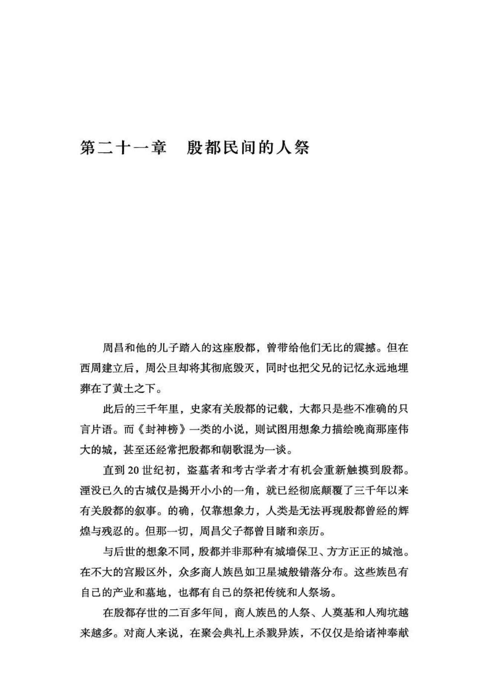
原书阅读器页 408原书物理 PDF 页 406印刷页 394
殷墟遗址群分布图（图）[[fn:1]]
国都大道边的杀祭场
当周昌父子渡过黄河、北上进入殷都范围时，他们先要经过一片制陶工业区，透过陶窑冒出的滚滚烟尘，商王华丽的宫殿区已遥遥在望。这座制陶聚落是刘家庄北地，在殷都王宫区以南1公里处的通向王宫的大道边。
刘家庄北地已经发掘殷商墓葬上千座，绝大多数是没有青铜随葬品的贫寒小墓，有青铜礼器和殉人的只有20多座（盗墓者破坏了一些墓葬，劫余的数字并不完整）。可见，这个族邑的贫富差距巨大，赤贫者构成庞大的金字塔底端。
这片制陶区南北300米，东西200米，约六万平方米，规模很大，平民和贵族的家宅及墓葬散布周边，[[fn:2]] 此外，还有大量陶窑以及多座丢弃残次品陶器的大坑。
作为聚落，在殷墟一期，刘家庄北地的居民还很少，但到二期，出现了众多房屋和墓葬，这应当有武丁王搬迁王宫的影响。此后，从二期到三期，从三期到四期，墓葬数量均成倍增加，可见殷都的持续繁荣和发展。
这里还发现了两条南北走向的大路，向北一直通往商王宫殿区。西侧的大路，规模较大，路面上有多条车辙，多数是轮距1.4米左右的货车的，可能是牛或人拉的载重车辆，只有少数是轮距更宽的马车辙。大路经过沟渠时，有座方木架设的木桥，显然，它是王宫通往南方的交通主干道。
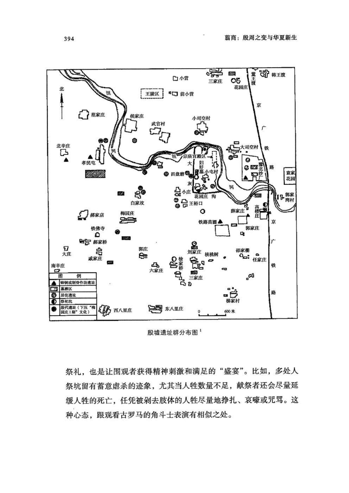
原书阅读器页 409原书物理 PDF 页 407印刷页 395
在制陶区，有多处较大的长条形建筑基址，发掘者推测，这可能是制作陶器的工坊。
此外，还有一座面积较大、工艺考究的住宅F79，殷墟四期建造，应当属于身份较高的贵族：
一，柱础石排列规则，勾勒出房屋的基本结构，呈四面围拢的“回”字形；
刘家庄北遗址西大路上的车辙（图）[[fn:3]]
二，边长20多米，总面积约450平方米，中央庭院（天井）约10米见方；
三，一条南北走向的过廊把庭院分成东西两部分，西小院有一座椭圆形大坑H2479，底部有一具人骨，可能是建筑落成后杀祭的人牲，头部放着一块刷红漆的石头，脚部放一件陶罐；
四，庭院内还有由两座蓄水坑和一处陶水管构成的排水系统。[[fn:4]]
这座房屋位于制陶工业区东南侧，看来它的主人要管理的本部族事务也包括制陶工场。平时，他要参与商王朝廷的议事和典礼；战争时，则受命带着自己的部族武装出征。
刘家庄北地发现多处祭祀遗址，大多数分布在制陶工业区内，从中可见殷都普通商人族邑的宗教生活。
H77是一座制陶取土形成的大型浅坑，主体部分已被后期破坏：一，残留六具人骨，底层是两名男性，中层四人，大体摆放成半圆形，其中可辨认的有一男一女，多数人体残缺不全；二，出土了较多硬陶和原始瓷残片，属于较高端的陶器产业；三，发现两件残破的鹑身人面陶塑，以及一枚青铜印章，印章图案为两个（甲骨文，形似八）形族徽和一条蟠龙。
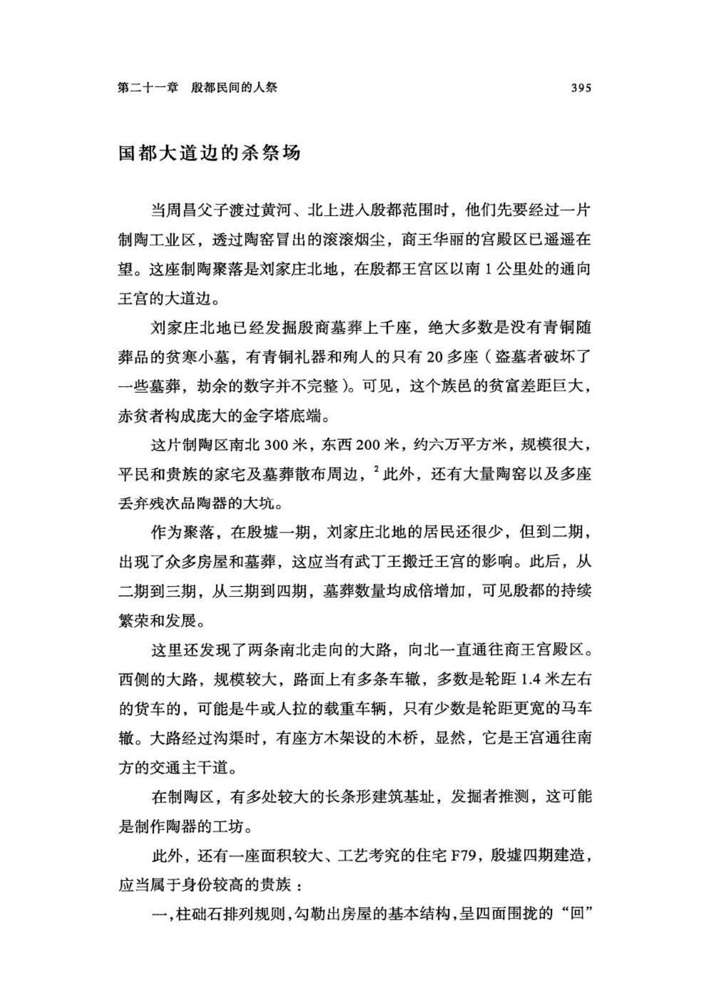
原书阅读器页 410原书物理 PDF 页 408印刷页 396
除H77，还有四座用人和牛混合献祭的坑。其中，H1050比较完整，呈椭圆形，有两枚人头骨和一段没有头与四肢的人躯干骨，牛骨架完整，牛头被折弯，应该是塞入坑内时所致。[[fn:5]]
H77和H1050这两座祭祀坑属于殷墟二期，此时，陶器生产区刚建立不久。
在制陶工业区以西约100米，刘家庄北还有一片密集的祭祀坑区，一条东西向道路（L10）连接着两条通往王宫的主干道，祭祀区就在这条道路的南北两侧。目前只发掘了路北很小一部分，发现祭祀坑18处，包含大量被肢解的人和动物的骨骼，其中人牲多数为青壮年，也有少数儿童，牲畜则是马最多，还有猪狗牛羊等。
发掘简报只介绍了其中的一座（H524），且只发掘了表面两层，第一层中有三名女牲和两匹雄马的骨架，第二层有三具人骨、14具马骨、九具黄牛骨和五具猪骨。人骨都残缺不全，有的缺半条腿，有的只有头骨，其他牲畜骨骼也多不完整，发掘简报认为，它们大都是被肢解后埋入的，骨头上的砍割痕迹非常明显。[[fn:6]]
根据坑中陶片判断，从殷墟二期到四期的近两百年里，L10道路北侧的这片祭祀区一直在被使用。目前发掘和报道的只是很小的一部分。
在刘家庄北各祭祀区，用人和牲畜混合且肢解献祭的特色很明显。在王陵祭祀区，人牲尸骨大都单独掩埋，和牲畜在一起的很少，而且肢解的只占总量的较小部分。即便在殷都内外的其他商人族邑，刘家庄北这种祭祀风格的也不太多。
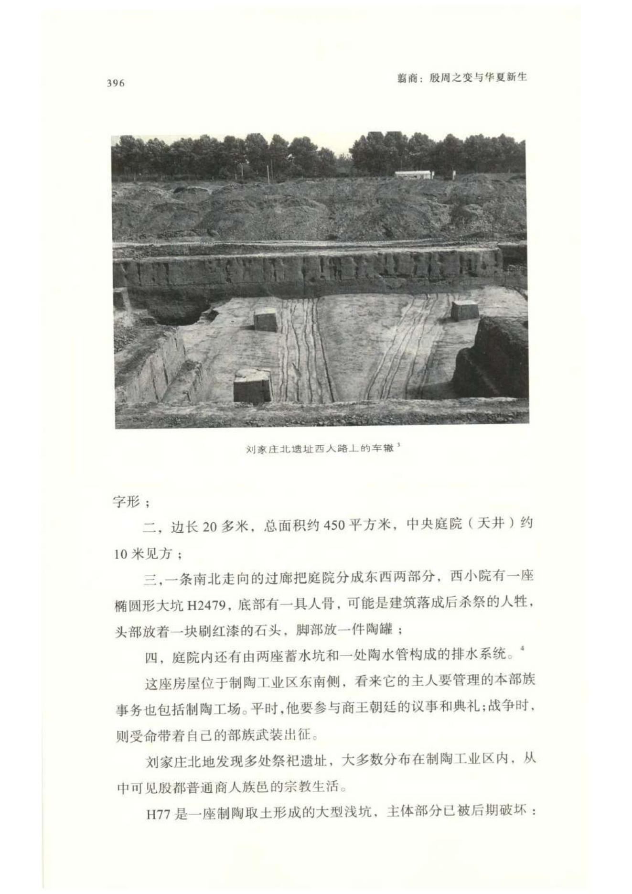
原书阅读器页 411原书物理 PDF 页 409印刷页 397
在殷商之前的早商和中商（郑州商城、偃师商城和小双桥）遗址，极少发现马骨和用马献祭，到殷商，马还是比较珍贵，王陵区之外较少发现有用马献祭的。这说明：一，刘家庄北聚落应该很富裕，否则难以承担如此大量的用以杀祭的马匹；二，不同的商人族邑也有着不同的献祭风俗。
此外，L10路边这处献祭场的位置也有些奇怪，它不仅在L10路边，还紧邻通向王宫区、布满车辙的西大路。刘家庄北的制陶工场并不在这里，人们为何要把主祭祀区设在这里？
有学者认为，这可能是“路祭”，向道路之神献祭。这种说法有一定道理。杀祭仪式具有很强的表演性，西大路上满是往返于王宫区的车队和人流，在这里公然杀祭、屠剥人牲和牲畜，有助于路人更深地领略殷商王朝都城的气象。对于初入殷都的外来者，刘家庄北祭祀场的一幕会相当难忘。
初入殷都的周昌父子，可能也见识到了刘家庄北的这种祭祀，虽然之后他们还会见识更宏大的王室献祭典礼，但给他们留下最深刻印象的应该还是刘家庄北。灭商后，这个族邑遭到了周人的暴力毁灭，这种惩戒在其他商人族邑很少见到。
H1050人牛混祭坑平面图：A、B是人头骨，C是人躯干骨，D是牛骨（图）
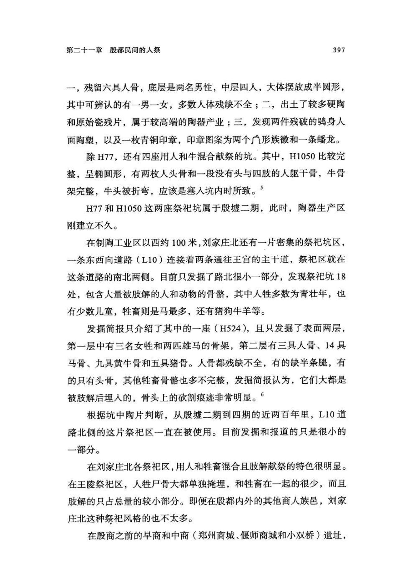
原书阅读器页 412原书物理 PDF 页 410印刷页 398
F79平面及剖面图（图）
商代道路（L10）（图）
H524平面图[[fn:7]]（图）
大司空聚落的残忍
殷都王宫区向东数百米的洹河对岸，是大司空村。1958年，村南要兴建一座大型棉纺厂，先期进行考古勘察时发现了一座规格较高的殷商聚落，尤其是还发掘出了一片武丁王时期的卜骨，上面刻着“辛贞在衣”四个字。“衣”，就是殷，甲骨卜辞中出现殷都地名的并不多，这是很难得的一片。[[fn:8]]
这短短的四个字刻在牛肩胛骨的顶端（骨臼处），是这片卜骨的简介，或者叫总目，没有太多信息量，肩胛骨扇状的主体部分才是占卜具体事件的，但已经断裂丢失。
殷墟晚期，大司空村已扩张到方圆约1公里，内部很可能被分为若干族邑的居民点。2004年，考古队发掘了354座中小型墓：
一，均分布在各自族邑附近，墓主多数是普通商人，少数是中小贵族。多数规格稍高的墓都已经被盗空，剩余有殉人的墓四座。
二，共发现93件随葬的主战兵器：铜戈57件，铜戣（三角形戈）1件，铜矛30件，铜钺1件，铜镞87枚，铅戈3件，铅矛1件。铅制的戈和矛不能用于实战，属于专门随葬的明器，可能墓主家经济拮据，舍不得用实用兵器随葬。各种随葬品中，戈的地位最重要，一般放在棺内主人右手边，呈随时备战状态。
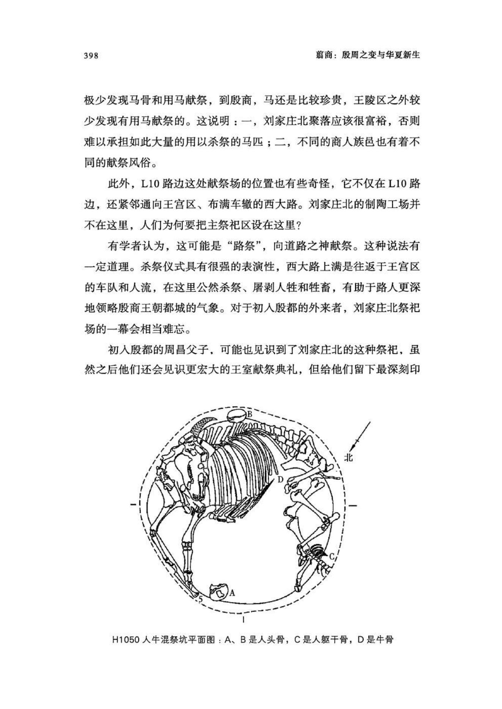
原书阅读器页 413原书物理 PDF 页 411印刷页 399
三，从时代特征看，在殷墟一期，大司空聚落有随葬品的墓不多，且一般只随葬一件戈。然后，随葬品就逐渐多了起来，有些墓随葬有两三件戈或矛，且始终有一件戈在棺内主人右手边。从比例看，大约七分之一的墓随葬有兵器，考虑到部分墓葬被盗，比例应该还会高一些。
“辛贞在衣”卜辞（图）
四，发现四座车马坑，各有两座相距较近，每座坑中都葬有一辆车、两匹马和一名驭手，马和车身有青铜和螺钿装饰。
五，发现一座未被盗的中型墓M303，属于殷墟晚期，大约是纣王的父亲帝乙时期下葬的。墓中有四只殉狗和四名殉人；有大量陶器、铜器及小件玉器，铜礼器上大多铸有“马危”的族徽铭文；有铜戈30件、铜矛38件和铜镞97枚，看来，墓主至少能为70名下属提供武装，加上自备武装的部族成员，大约会有300人的规模，属于比较有实力的军事贵族。[[fn:9]]
推算一下，倘若大司空村有五个“马危”这种规模的族邑，就可以组成一支有1500人左右的军队，战车可能在10—50辆之间；倘若殷墟遗址群范围内有十几个大司空村这样规模的聚落，将会有十余万人口，可以调集两万人左右的军队。考虑王陵区商王墓中随葬的主战兵器规模一般在数百件，是大司空村M303这类墓葬的十倍，由此判断，商王自己的亲随武装规模可能达千余人，战车的比例也会比较高，到殷商晚期可能有百辆左右。
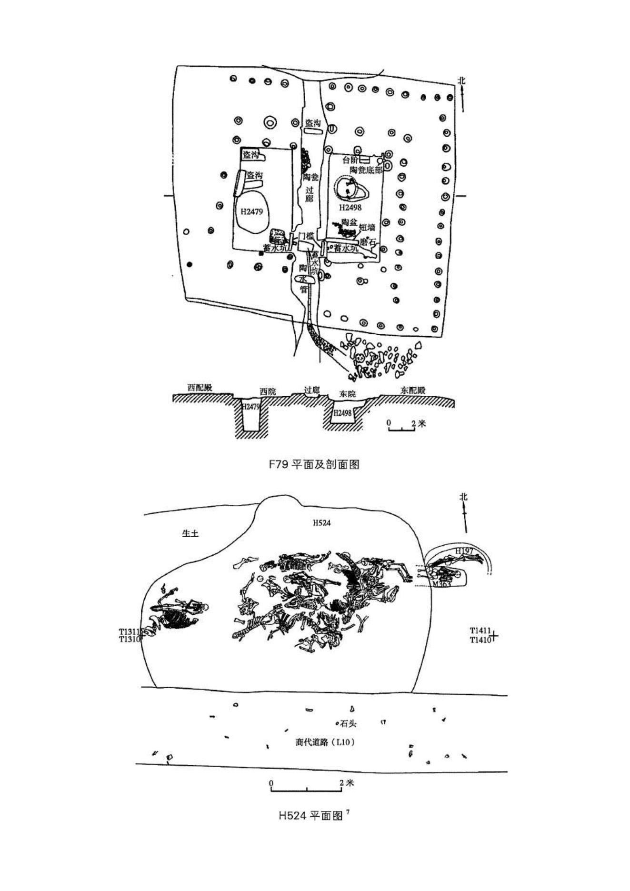
原书阅读器页 414原书物理 PDF 页 412印刷页 400
在整个商朝控制区内，殷都是最大的聚落群，各地分散的商人聚落-侯国的总人口及能提供的兵力可能在殷都的10—20倍之间，但很多侯国分布在异族地区，需要镇抚当地土著，不可能为“勤王”派出全部兵力。这样估算，在殷商晚期，商王能够在整个王朝范围内调集的兵力大约有十余万。
大司空M231车马坑侧后视照片（图）
考古队还在大司空村棉纺厂范围内发现多个抛弃废骨料的坑穴，推测这里可能是一座规模较大的骨器作坊：有锯制骨料的小铜锯，只有十几厘米长；钻孔用的铜钻和石钻；打磨用的磨石；一个半地穴式的狭小工棚。
骨器原料来自牛、羊、猪、鹿等动物的骨头和角，没有发现使用人骨。从各种半成品骨料看，这里主要生产骨笄：先打磨出圆润细长的骨杆，再把小块骨头加工成蘑菇头状的“帽”，有些会做成各种鸟等艺术造型，然后固定在笄杆顶端。
大司空村制骨作坊区大约有1300多平方米，相当于三个标准篮球场的大小，完全不能和数万平方米的刘家庄北制陶作坊区相比，毕竟骨器在生活中的需求量远不如陶器大，而且殷都范围内不止有这一座制骨作坊。
1958年，大司空村的考古还只是发掘了很有限的范围便匆匆让路给了棉纺厂的建设。由于被厂区叠压，此后的发掘工作非常零碎。2004年，在此地发掘出一片殷墟晚期的住宅遗址（C发掘区），面积2600平方米，有一组多院落的四合院，周边密集分布着成排的房屋，有些单排房屋长度超过40米，如F23。显然，它们是高级贵族的家宅和祠堂。
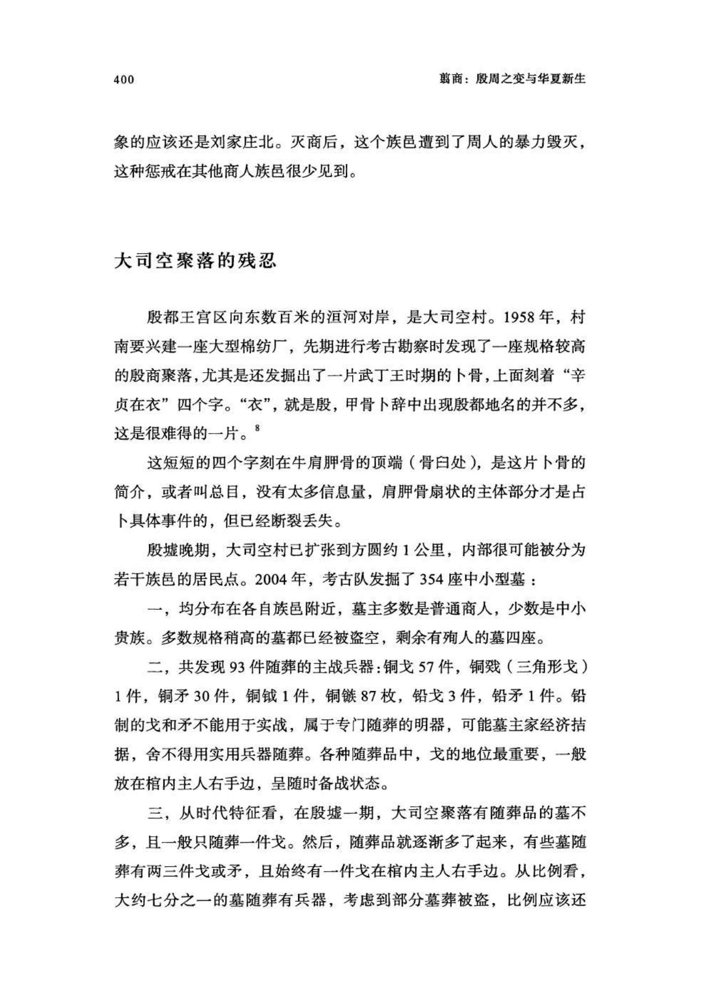
原书阅读器页 415原书物理 PDF 页 413印刷页 401
为保存建筑基址，考古发掘并没有挖开全部夯土，仅是开挖了几条解剖沟，便发掘出多处儿童骨骼，说明这些房屋普遍使用幼儿奠基：体型较小的装在陶罐里，稍大的直接放在坑中，身上覆盖陶片，然后在上面构筑夯土地基。
如F34地基，有八具童牲；F24，三具；F23，十具；F21，三具；F35，两具；F36，两具。目前考古队在C发掘区共发现14座建筑和86具童牲，而这还仅仅是解剖沟的一小部分。
装童牲陶罐四只（图）
〔札记：童牲的出现应该是生产力上升的一个标记。〕[[editor-fn:1]]
古代婴儿死亡率高，人们有时会把夭折的幼儿装在陶罐里，埋在房屋周边，新石器时代已经有很多这种遗迹，这不足为奇；但大司空村的不同之处是，婴儿大都被埋在夯土地基下或者夯筑在地基中，说明是在房屋建造前和建筑过程中埋下的。显然，这是人为的、有宗教意义的奠基。
至于这些婴儿的来源，有学者曾猜测可能是房屋主人夭折的子女，但问题是：一，在新居建筑前，不可能有这么多儿童同时病亡；二，也不可能是把之前的儿童尸体集中起来再利用，因为有些童尸不是装在陶罐里，而是用陶片覆盖的，从骨架的完整性看，并没有捡骨迁葬的痕迹。
所以，剩下的可能性就是，这些建筑的主人拥有较多奴隶，在建筑房屋时会使用一些奴隶的幼儿作为童牲。但即使一次搜罗十名婴幼儿也需要比较大的奴隶人口基数，考虑到C区几乎每座房子下面都有多名童牲，可见大司空村的贵族们保有的奴隶数量相当可观。
〔编者注1〕祭祀用童牲，必然是畜牲。
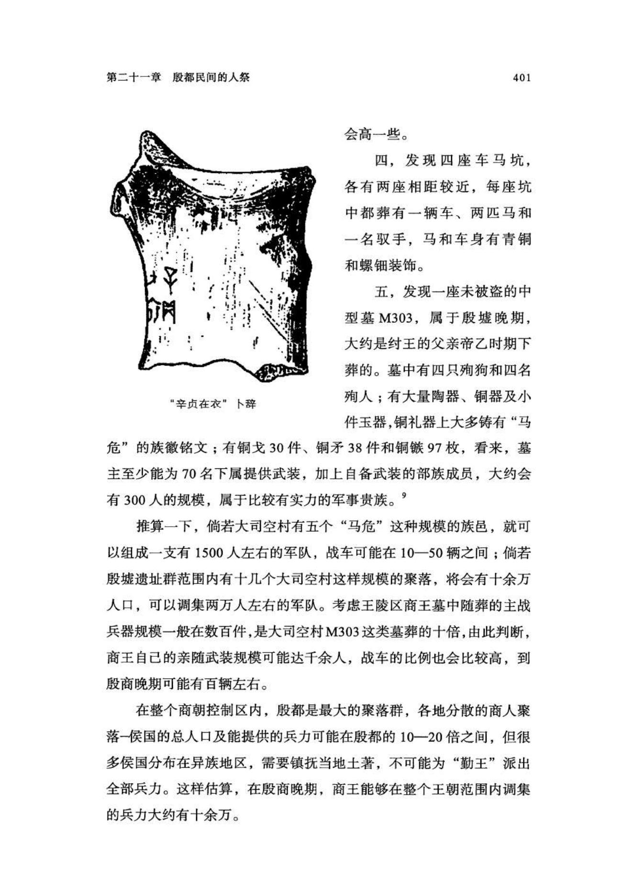
原书阅读器页 416原书物理 PDF 页 414印刷页 402
和刘家庄北聚落类似，大司空村也有人畜混合祭祀坑与马祭坑，但数量少得多。大司空村单独的人祭坑较多，而且殷商各时期的都有，较早的，如祭祀坑H407，属于殷墟一期，时间上限是盘庚王在洹河北岸建都，最晚可能到武丁王在洹河南岸营建新王宫，坑内埋有四名成人和一名儿童的尸骨，能鉴定出两名男性和一名女性，其中，男性B的头和右臂被砍掉，儿童E的右腿被砍掉，不明性别的成人D的骨骼残缺更多。发掘者推测，这些被献祭者可能属于一个或两个家庭。
同属殷墟一期的，还有尸骨灰坑H431，坑底有一具八岁左右儿童的尸骨，两条大腿被砍去，此外，坑内还埋有成年人的零碎肋骨以及各种生活垃圾残留。这些迹象表明，该坑并非严肃的祭祀坑，只是抛尸被虐杀者的垃圾坑。零碎的肋骨显示，附近居民可能有食人的习惯。
不知为什么，大司空村被献祭的人牲和被虐杀者大多都被砍掉了腿，而且这种行为一直延续了二百多年。很可能，这是大司空部族杀祭的一个特征。
祭祀坑H310（殷墟三期）则保留着更恐怖的一幕。这座坑的坑壁陡直规整，里面埋有一具被砍掉两条小腿的尸骨，趴在坑壁上—— 很可能他被扔到坑内的时候还没有死，甚至试图爬出去，直到以这种姿势被活埋。
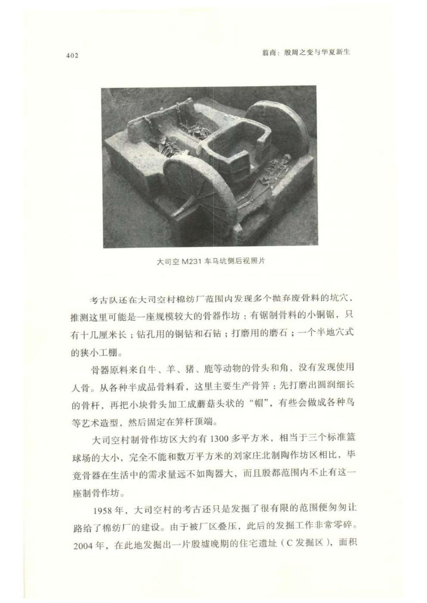
原书阅读器页 417原书物理 PDF 页 415印刷页 403
H278（殷墟四期）是一座规范的祭祀坑，也保留着虐杀的现场。
大司空H407祭祀坑（图）
坑中埋有一具成年男性尸骨，怀中紧抱一具幼儿尸骨。成年男性被从腰部砍断，下半身和上半身并排放置，大腿和小腿被紧密折叠在一起，脚跟紧贴骨盆；上半身只剩头部和残缺的两臂，颈椎、肋骨和一只手被砍掉，[[fn:10]] 但他仍用残余的胳膊紧抱幼儿。幼儿的小腿和小臂也都被砍掉。显然，在面临杀戮时，这名男子不愿交出幼儿，杀祭者也不愿立刻杀死他们，而是逐次砍掉他们的腿脚，更对这名成年男性实施了剔剥肢解。
殷商有一种斩杀人牲或牛羊的献祭方式，名“卯”，最早见于甲骨文。有文字学者认为，这是指把人或牲畜对半剖开悬挂。甲骨卜辞中，
商王“卯”羌和牛羊的记载很多，但王宫区和王陵区的祭祀坑遗址较少发现这种迹象。
祭祀坑H310（图）
不过，大司空村可能存在“卯”祭的遗存。殷墟四期的H250，是一座非常规范的直筒型祭祀坑，坑底有一具人骨，剁去了小臂和小腿，背部被剁开，砍下了脊椎和腰椎，只埋入剩余的躯干和头部。由于没有脊柱连接，两扇肋骨呈自由张开状。残骨只能保留很有限的信息，但可以合理推测，这个人的胸腔和腹腔中的内脏肯定也经过了专门的摘除和处理。
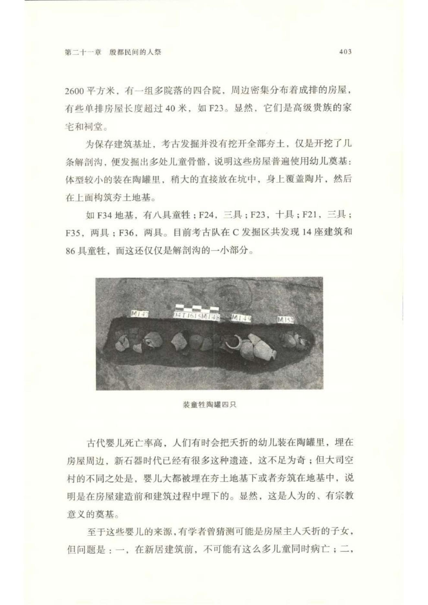
原书阅读器页 418原书物理 PDF 页 416印刷页 404
此外，祭祀坑H305中有两具人骨的肋排也被从脊柱处切开：1号只有头骨、部分脊骨和上臂骨，两扇肋骨被卸走，不见下半身；2号则被剁成头部、上身和下身三段，髓骨和脊椎骨被砍掉。这可能也是“卯”祭的一种方式。
在甲骨卜辞中，“卯”祭出现很多，但考古迹象少。这有其自身原因，因为商王执行“卯”祭多在殷墟王陵区，那里有众多祭祀坑，部分坑中有大量被肢解过的人体部位，尸骨过多且凌乱，发掘报告不可能提供详细的文字描写和绘图，自然很难从发掘报告中找出“卯”祭迹象。相对而言，大司空村祭祀坑的尸骨较少，故而比较容易辨别砍杀的过程。
看起来，大司空村的人祭现象似乎格外触目惊心。其实，与其他商人聚落相比，这里的人祭和杀戮数量并不算出众。这主要还是发掘报告提供的信息量不同而造成的：大司空村的考古发掘较晚（2004年发掘，2014年出版报告），之前的各种殷商遗址则发掘较早，报告的篇幅，尤其对人祭坑和尸骨的描写相对比较简略，读者自然难以复原献祭时的场景。
祭祀坑H278平面图与局部照片（图）
大司空H250单人祭祀坑（图）
大司空村的发掘报告给我们展示的，不只是商代人祭的血腥，屠剥人牲固然是献祭者给诸神和自己加工食物的过程，但献祭者似乎也喜欢观赏人牲被剁去肢体后的挣扎、绝望和抗争。献祭是一种公共的仪式和典礼，从这种血腥展示中获得满足感的，应该不只是使用刀斧的操作者，更还有大司空村从贵族到平民的广大看客。
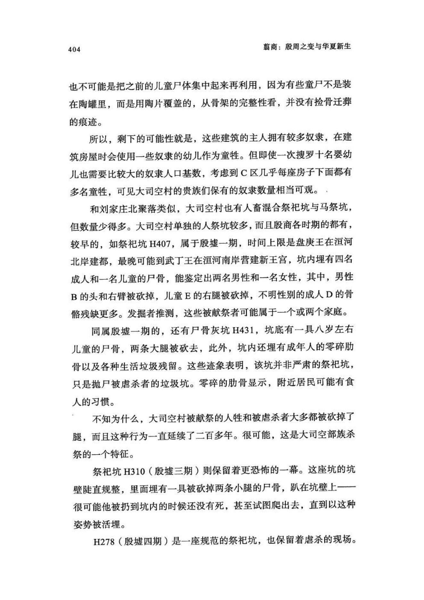
原书阅读器页 419原书物理 PDF 页 417印刷页 405
其实，在大司空村更早的发掘中，考古工作者曾发现过更为惨烈的祭祀现场，但因为发掘报告提供的信息量较少，所以人们对它们的印象并不太深。比如，1971年发掘的一座祭祀坑，里面埋着身首分离、层层叠叠的尸骨：头骨31颗，躯体26具（有些不完整）；经过对5颗较完整的头骨进行鉴定，有3颗是3名三十岁左右的青壮年男性的，另外2颗则分别是1名四五岁和1名六七岁的儿童的。
这座坑呈近圆形（直径在2.8—3.4米之间，深0.6米），应是特意为祭祀挖的。坑内没有随葬品。从埋葬形式看，这些人是三五个一组被拉到坑的西南边缘砍头，每组的人头都相对集中在一起。尸体在被剁截或剔剥之后扔进坑内，相对集中在西南侧。
其中有一人的头颅和身躯相连，发掘者推测，应该是砍头时没能完全砍断的结果。还有一些零碎的儿童肢骨堆在一起，显然经历过肢解，但因为原报告过于简略，无法获知详情。
从填土内的残陶片判断，这次祭祀发生在殷商晚期。不久，商朝就结束了，这里再没有居民，直到战国才重新有人来定居，所以压在坑口上面的是战国文化层。[[fn:11]]
大围沟内的抛尸
殷墟宫殿区外没有发现城墙，但在最初规划王宫时，武丁王曾计划在它的西南两面挖掘一条L形大壕沟，与流经王宫北面和东面的洹河相连，从而构成闭合的防御环壕。殷墟的宫殿宗庙区、小屯村占卜师聚居区以及王宫外围的一些附属聚落，包括妇好家族的聚落和墓地，都在它的保护范围内。
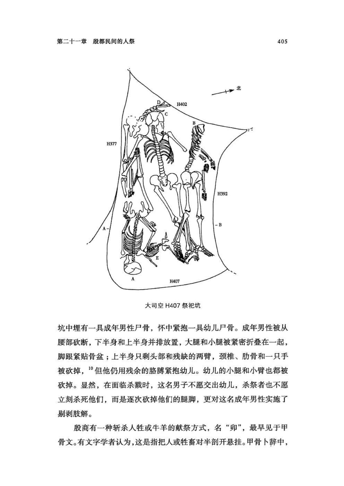
原书阅读器页 420原书物理 PDF 页 418印刷页 406
走出殷墟宫殿宗庙区的南大门，右手边是著名的殷墟小屯村，沿着村边的道路向西走数百米，路北有一座大院，是中国社科院考古所安阳工作站。1958年，在兴建工作站之前，考古队先对这里做了探查和发掘，发现了这条环绕宫殿区的大沟。
1971年发掘的一座祭祀坑平面及剖面图[[fn:12]]（图）
从后续钻探的数据看，这条大沟西段长1000余米，南段长约600米，但南面并没有完全贯通，可能武丁认为没有外来威胁，挖了一大半后放弃了，到武乙王前后（殷墟三期），大沟逐渐被泥沙淤积和居民抛撒的垃圾填平。所以，它最初被考古学者称为“大灰沟”（垃圾沟），后来又有人称它为“大围沟”。
目前，对这条大沟的发掘还很少，主要是用洛阳铲钻孔，以判断其范围。最主要的发掘是在1958年进行的，但也只是试探性地发掘了工作站附近长20米、宽15米的一小块区域。在这300平方米范围内，共发掘出24具尸骨，发掘报告列举的，有无头尸骨一具，无双脚的两具，无左腿的一具，双腿全无的一具，凌乱骨骼一处（可能是个被肢解的人），幼儿尸骨两具。
所有尸骨都没有随葬品和棺木葬具，只有一具骨架上粘附着粗糙纺织物的痕迹，应是装在麻袋里扔进沟的。发掘报告推测：“他们大概都是惨遭奴隶主刑戮和被迫害致死的奴隶，然后被随意挪入沟内的。“[[fn:13]] 但因为发掘报告中没有这些尸骨的分布图、照片和线描图，所以我们难以判断他们的分布范围和具体死因。这些尸骨被埋在距离地表1—4.5米之间，呈杂乱分布状态，可能是在多年内多次扔下的。
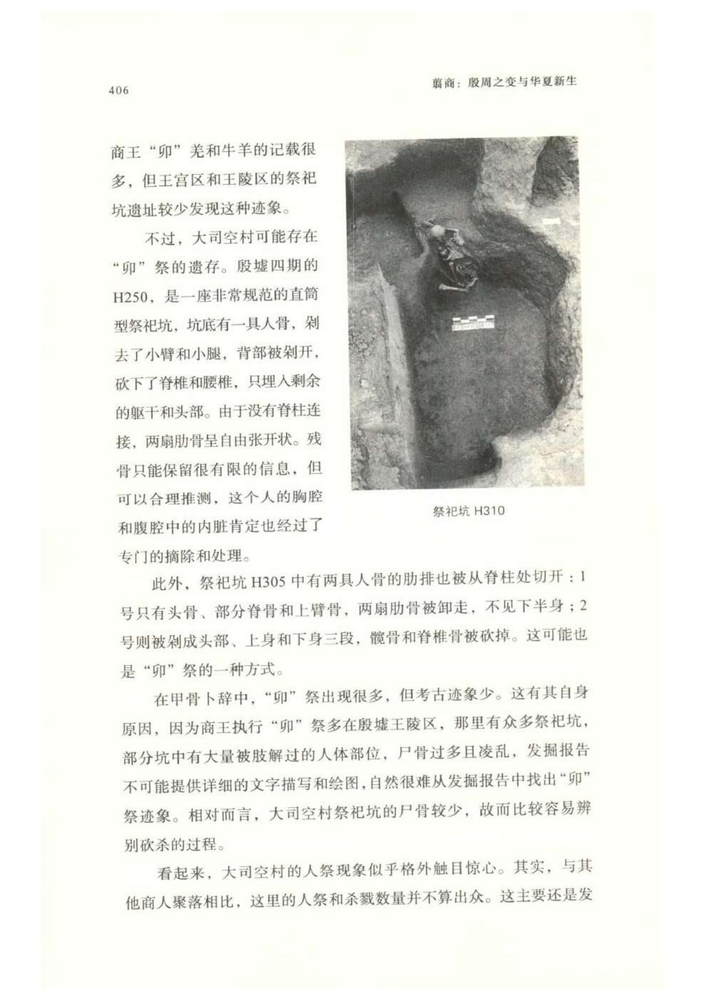
原书阅读器页 421原书物理 PDF 页 419印刷页 407
这块发掘区域只占这条大沟总面积的不到百分之一，难以想象，整条大沟内到底遗弃了多少死者的尸骨。
那么，向大沟里抛掷尸体的是什么人呢？
这条大沟在宫殿区西南三四百米远，王宫内死的人应该不会扔这么远。发掘区在大沟外（西）侧，所以抛尸人肯定也住在沟外，大约是今考古工作站大院一带。而工作站临街的南围墙正好压在一座商代建筑基址上面，从中有发掘出作为柱子基础的石块。发掘报告推测，这座商代建筑东西长近20米，南北进深约6米，从规模看，应该是家境比较殷实的贵族的家宅，或者是某部族的公共建筑，比如祠庙。
考古所安阳工作站南墙建筑基址平面图（图）
这座建筑共用了八人奠基：南墙下面埋的是四只各装一名幼儿尸骨的陶罐（M1、M2、M3和M4），呈直线排列，彼此相距约2米；建筑基址里夯筑进四具成年人尸骨（M01、M02、M03和M04），散布在房子的南北两端，头分别朝向东南西北四个方向，身体延长线呈“井”字造型。屋内有一座灶坑（K1），和其中三具尸骨正构成一个长方形，且分列四角。
头朝北的M01，头骨有裂痕，可能是被击打头部致死；头朝南的M03，两腿间有一枚骨镞，可能曾被当作射箭靶。这些骨架和作为柱础的石块在同一层，应该是建筑奠基时埋下的。
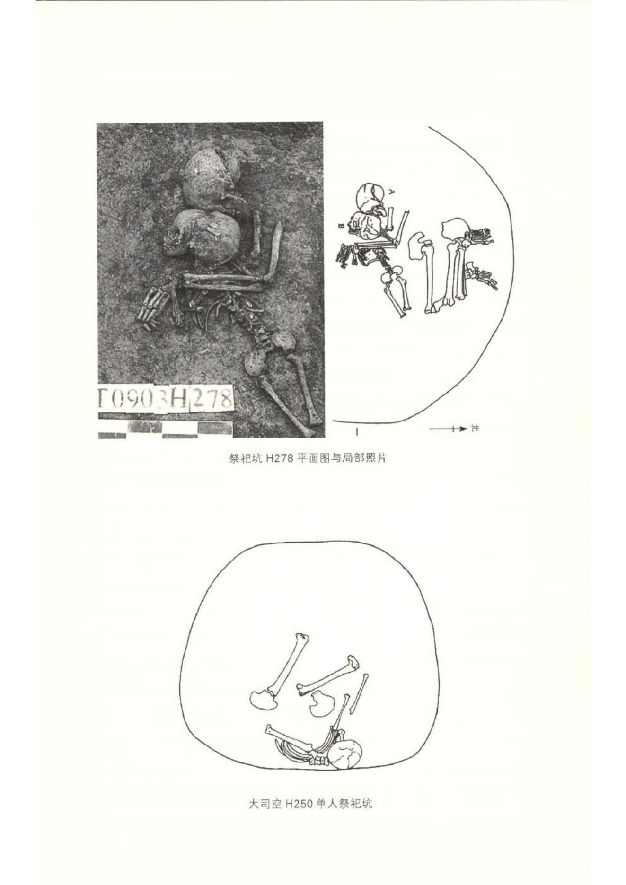
原书阅读器页 422原书物理 PDF 页 420印刷页 408
这座房屋建成于殷墟三期，武乙王（纣王曾祖父）在位前后，此时，大沟即将被填平，殷都人口正处于持续增长中，这块曾经荒芜的土地开始有了聚落。但房屋范围内出土的物品却和房屋的规格不太匹配：各种陶制的簋、鬲、盆、罐碎片，石镰三件，蚌镰一件，收割用石刀一件，骨镰两枚。看来，主人的生活还是以农业为主。[[fn:14]] 这也说明，虽然武乙王时期商人还在使用如此“不先进”的石器时代农业生产工具，但已有充足的人牲，且成本低廉。而这正是古公亶父带领周族人迁居周原的前后。
这一地区的所有建筑，随后都毁于大火，留下大量红烧土堆积。但根据考古发掘，这些建筑彼此间并不相连，不大可能因为一场火灾就全部焚毁，很可能有人为因素，也就是灭商后周人对殷都的系统性毁灭。
逐一列举殷都各族邑的人祭和杀戮现象会令人过于压抑，这里只强调一点：以上讲述的人殉、人祭和人奠基现象，在各商人族邑中都“大同”，只是个别会因产业或传统习俗而有些“小异”。
比如，王宫南侧的苗圃北地聚落，是铸铜业集中区，所以人牲多是在铸铜地点被献祭，有些可能被泼洒过铜熔液，故而有青绿色铜锈，此外，还有用婴儿头骨献祭铸铜设备的，这和老牛坡铸铜遗址的发现类似。[[fn:15]]
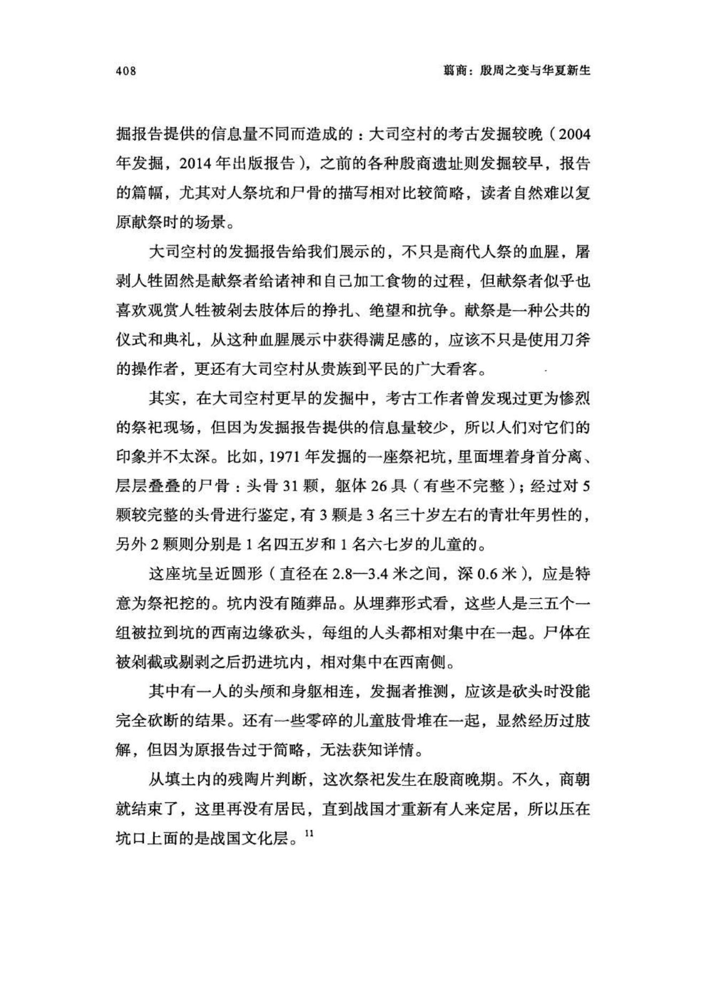
原书阅读器页 423原书物理 PDF 页 421印刷页 409
在不远处的新安庄西地聚落，大型取土坑2007AXAH221“有很多人骨、牛骨、马骨、狗骨、猪骨等，人骨和其他动物骨骼杂乱分布在一起，几乎无完整个体”，根本无法统计人牲的数量。这种把人和家畜一起杀戮的献祭方式，和刘家庄北地大路边的祭祀场很相似。[[fn:16]]
总之，这些商人聚落的总体规律是，伴随着聚落规模的扩大，人祭和随意杀戮现象同步增长，并在殷墟末期达到顶峰。[[fn:17]]
拒绝人祭的商聚落
〔按语：自古以来〕〔札记：自古以来，两条路线斗争，总是向上的占下风。〕〔札记：古人与今人的善恶观似无区别。〕
在人命如草芥的殷都，也有与众不同的特例。
制陶聚落刘家庄北以西的戚家庄东，是另一处殷商族墓地。这里发掘出近200座商墓，但不论等级高低，都没有发现殉葬人。
比如M269，随葬青铜器有礼器20件，包括鼎四件，甗、罍、簋和斝各一件，尊二件，方彝一件，卣一件，觚三件，爵二件，觯一件，斗一件，器盖一件；兵器30件，包括戈13件，矛12件，钺二件，刀二件，弓形器一件。显然，墓主属于高级贵族，多数青铜器上刻有族徽“爰”字，但没有殉葬人，只用了两只狗。
这处墓地殷墟二期时已经存在，但大多数是殷墟四期的帝乙和帝辛两朝埋下的，随葬铜器上的族徽主要是“箙”和“爰”，目前，这片族邑聚落的生活区只发掘了一小部分，但没有发现人奠基和人祭的遗存，算是商文化里特立独行的异类。在殷墟遗址群中，目前只发现这一处。[[fn:18]]
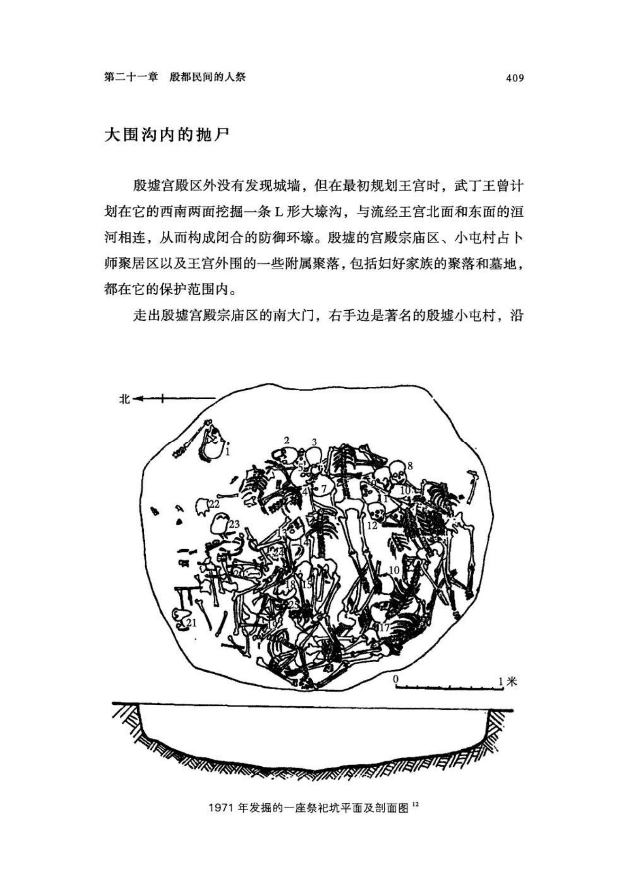
原书阅读器页 424原书物理 PDF 页 422印刷页 410
此外，经梳理与统计，戚家庄东墓葬用玉比例之高超乎寻常，且无玉质重器，均为小件器物，器形小而杂，不少为边角余料制作，存在半成品和纹饰未完工者，有研究者由此推测，生活在戚家庄东聚落的是一个以制作玉器为主业的部族。[[fn:19]] 也就是说，最初他们很可能不属于商族，只是因为有技术特长而迁徙到了殷都，但始终未能接受商人的人祭和人殉文化。
所以，当谈论商文化的血腥和残暴时，我们应当知道，那时也有过戚家庄东的“箙”氏和“爰”氏这样的聚落与部族。
注释
1中国社科院考古所：《安阳殷墟小屯建筑遗存》，文物出版社，2010年。
2中国社科院考古所安阳工作队：《河南安阳市殷墟刘家庄北地制陶作坊遗址的发掘》，《考古》2012年第12期。
3中国社科院考古所安阳工作队：《河南安阳市殷墟刘家庄北地2008年发掘简报》，《考古》2009年第7期。照片中的方形柱是发掘时隔梁的残留，古代并不存在。
4中国社科院考古所安阳工作队：《河南安阳市殷墟刘家庄北地2010—2011年发掘简报》。
5同上。
6中国社科院考古所安阳工作队：《河南安阳市殷墟刘家庄北地2008年发掘简报》。
7同上。
8中国社科院考古所：《殷墟发掘报告( 1958—1961 )》，第200页。
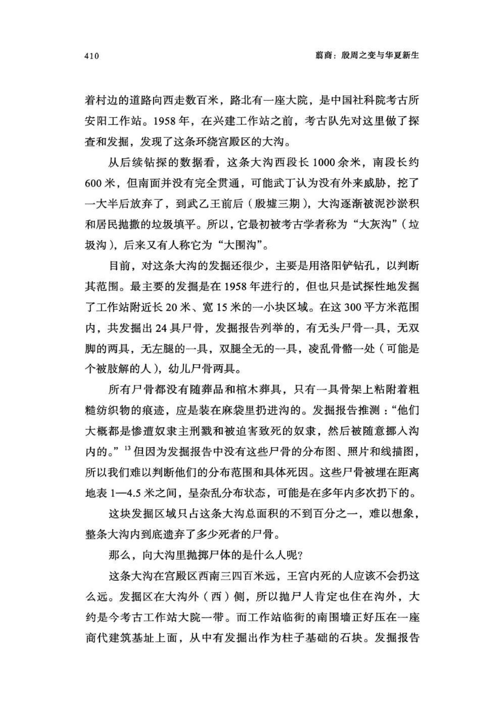
原书阅读器页 425原书物理 PDF 页 423印刷页 411
9中国社科院考古所：《安阳大司空：2004年发掘报告》，文物出版社，2014年。以下有关该遗址的基本信息、数据及图片，未注明出处的，皆出自该书，不再详注。
10发掘报告记载两只手都被砍去，但从照片来看，应为一只手的手骨。
11安阳市博物馆：《安阳大司空村殷代杀祭坑》，《考古》1978年第1期。
12同上。
13中国社科院考古所：《殷墟发掘报告(1958-1961 )》，第94页。
14同上，第98—99页。
15同上，第55页。
16中国社科院考古所安阳工作队：《河南安阳市殷墟新安庄西地2007年商代遗存发掘简报》，《考古》2016年第2期。
17如想了解殷都各族邑人祭的基本情况，可参阅陈志达《殷墟》，文物出版社，2007年；以及杨谦《仪式与晚商社会》，山东大学博士论文，2016年。
18安阳市文物工作队：《殷墟戚家庄东269号墓》，《考古学报》1991年第3期；中国社科院考古所：《殷墟的发现与研究》，科学出版社，1994年，第138页。
19参见曹芳芳《殷墟戚家庄东墓地墓主身份辨识》，《考古》2014年第4期。
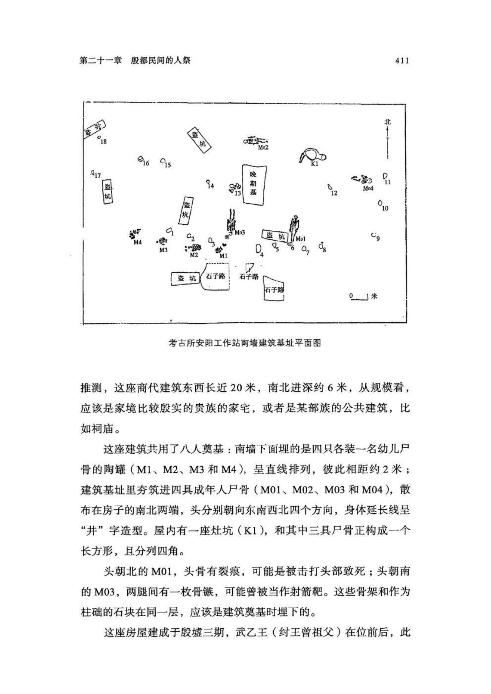
原书阅读器页 426原书物理 PDF 页 424印刷页 412
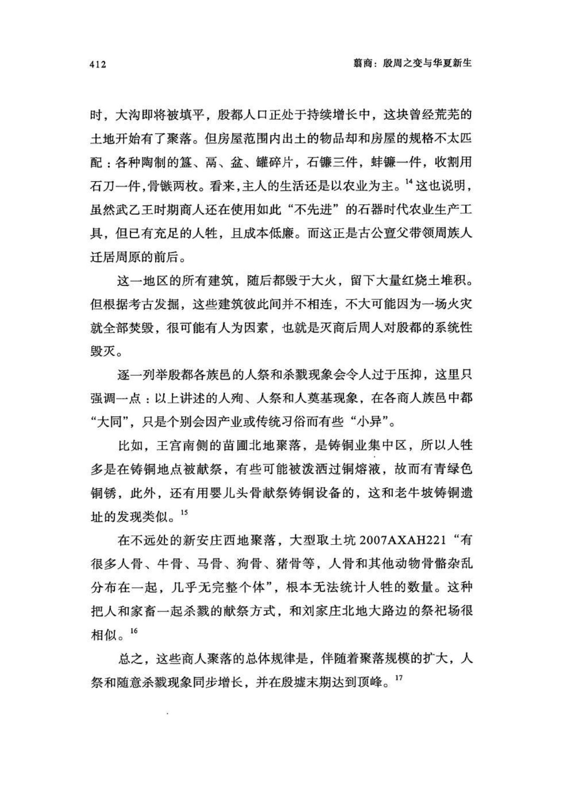
原书阅读器页 427原书物理 PDF 页 425印刷页 413
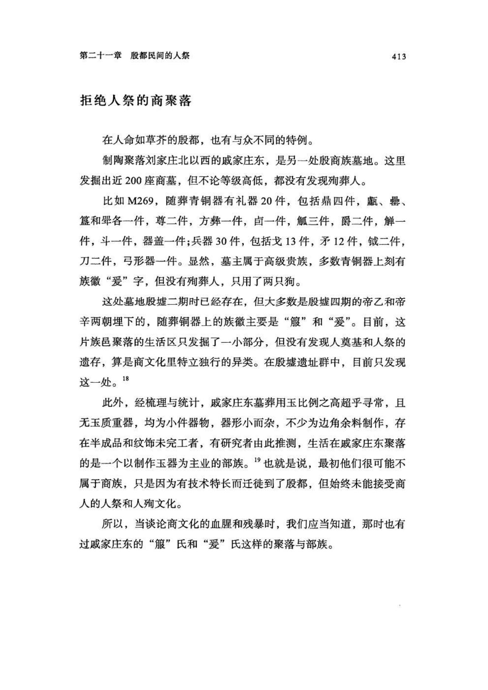
原书阅读器页 428原书物理 PDF 页 426印刷页 414
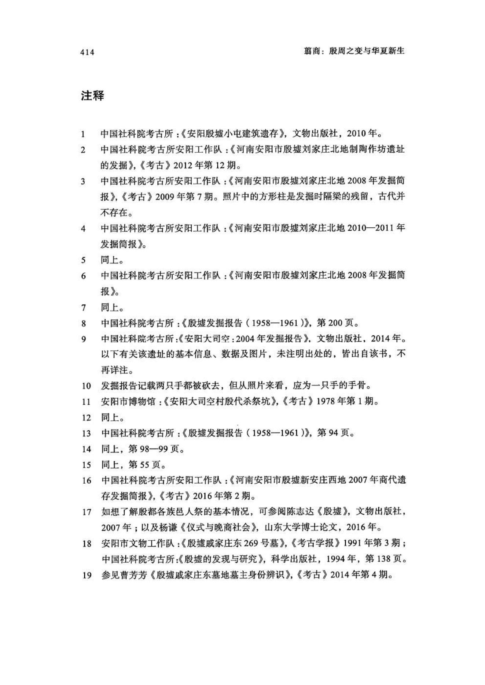
编辑札记
标记
先在正文中选择文字，再输入拼音；可用“拼音；简注”。